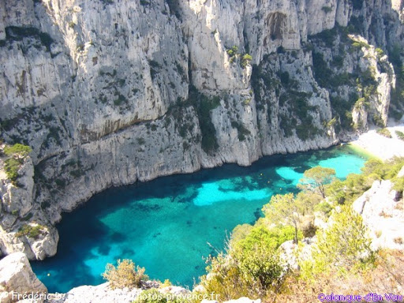

Marseille, capitale des plages
-
Le fait n’est pas très connu mais Marseille est une ville capitale pour les plages et cela à l’échelle
mondiale.
Le nombre et la taille des plages de Marseille sont exceptionnels.
La qualité et la variété des plages de Marseille sont remarquables.
- Plages des Calanques.
- Plages des îles.
- Plages familiales.
- Plages de sable et plages de galets.
- Plages immenses et petites plages de charme. La dimension historique des plages de Marseille est unique. La fréquentation des plages de Marseille se mesure en plusieurs centaines de milliers de personnes. L’art de vivre des plages de Marseille : culture (cabanon, musique…), sport (beach-volley, foot et rugby sur sable, natation, plongée, randonnée, surf, voile…)… La nature (faune, flore) des plages est souvent unique. Les grandes villes du Monde qui se distinguent à ce niveau par leurs plages ne sont d’ailleurs pas si nombreuses : Rio de Janeiro, Barcelone, Los Angeles, Nice… Dans cet article, les plages de Marseille sont présentées d’Est en Ouest, depuis les Calanques jusqu’à l’Estaque.
Plages des Calanques
Calanque Port-Pin ⇒ Voir articles Calanques – Cassis – Vaufrèges. Coordonnées et carte. N 43°12’13.2″ E 5°30’38.6″. Cliquer sur le texte-lien pour afficher la carte. Quartier Vaufrèges. Marseille – 13009 – A proximité de Cassis – Accès à pied depuis Cassis (le plus court) et la Calanque de Port-Miou. Environ 30 minutes. La descente finale est la partie la plus difficile. Accès en voiture par la RD 559 (Marseille-Cassis), parking face à l’entrée du camp militaire de Carpiagne. Continuer à pied par le vallon de Pailladou. Compter 1h30 et prévoir de l’eau à boire à l’aller et au retour. Plage de galets et de sable au fond d’une calanque longue et assez étroite (40 m environ). Plage bien protégée du Mistral. Ombres des pins. Plage sauvage sans équipement (pas de douche, toilettes, surveillance…). "alt="Plage des Calanques />
Calanque En-Vau
Coordonnées et carte N 43.202624, E 5.498270 Cliquer sur le texte-lien pour afficher la carte. Quartier Vaufrèges. Accès depuis Cassis par le Sentier des Douaniers qui passe à Port-Miou, puis Port-Pin. 45 minutes de marche. Accès en voiture par la RD 559 (Marseille-Cassis), parking face à l’entrée du camp militaire de Carpiagne. Continuer à pied par le vallon de Pailladou. Compter un peu plus que 1h00 et prévoir de l’eau à boire à l’aller et au retour. L’une des plus belles calanques de Méditerranée. Encastrée entre des hautes falaises. Choisir le matin en raison des hautes falaises qui cachent le Soleil l’après-midi. Bien protégée du Mistral. Plage de graviers. Plage assez étroite (100 m) pour une longueur d’environ 700 m. Eaux couleur turquoise. Zone recommandée pour la plongée sous-marine, notamment la Pointe Cacau. Plage sauvage sans équipement (pas de douche, toilettes, surveillance…). Site réputé pour l’escalade.